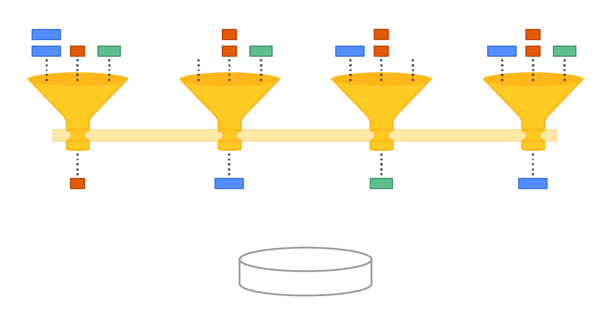
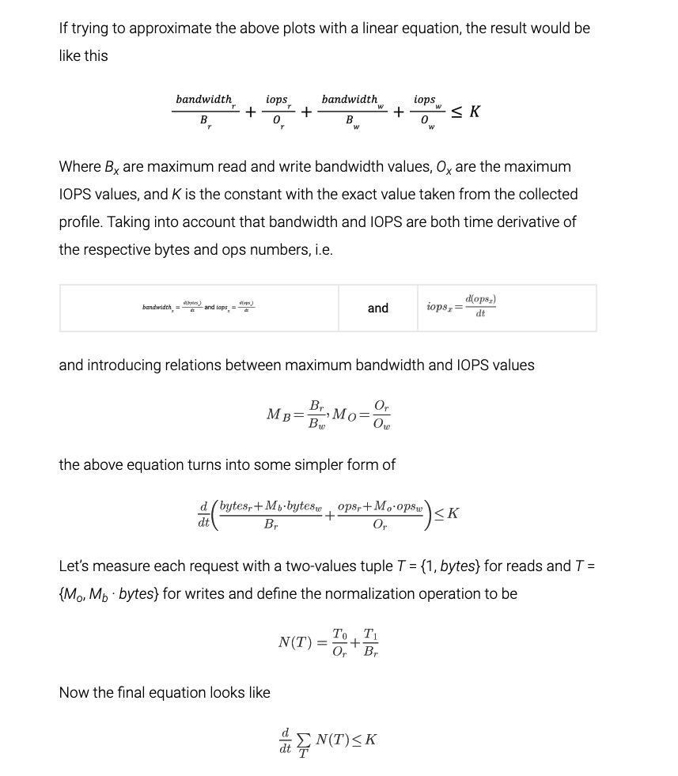
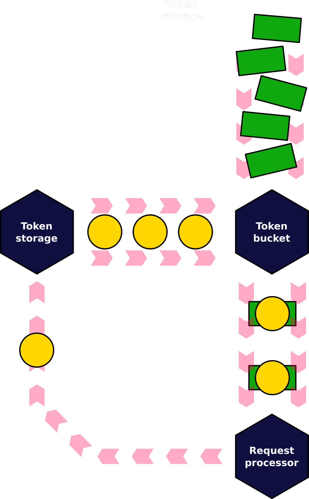

ScyllaDB’s New IO Scheduler
https://www.scylladb.com/2021/04/06/scyllas-new-io-scheduler/
新的IO Scheduler是在之前的基础上继续改进的，大致做了两点优化：
- IO queue那个部分被移除了，依然是之前每个shard自己进行IO请求。但是为了进行shard之间IO请求的协调，所有的shard在IO请求之前都会去共享IO quota object/IO Group上申请quota/admission. 这个IO quota object非常简单就是两个水位标记。
- 综合考虑了Mixed Read/Write之间的影响，包括IOPS/Bandwidth, 将IOPS/Bandwidth, Read/Write全部转换成为一个指标进行追踪，然后使用token bucket算法进行rate limit. 另外对在IO disk尾端将IO completed request变为token串联回来，形成完全的负反馈系统。
因为这个IO Group是个multi-cores之间的共享对象，所以需要考虑NUMA特性，否则NUMA近节点容易得到更多的quota造成io imbalance.

IO groups ensure no one CPU is burdened with all IO coordination. The different CPUs intercommunicate to negotiate their use of the same shared disk
The algorithm that worked for us is called “capacity rovers” and it resembles the way TCP controls the congestion with the help of a sliding window algorithm. A group maintains two values called tail rover and head rover. They are initialized with respectively zero and the “disk capacity” values. When a shard needs to dispatch a request it increments the tail rover and, if it’s still less than the head, dispatches. When the request finishes it increments the head rover. All increments, of course, happen with the help of atomic instructions.
Also note the shared rovers require each shard to alter two variables in memory with the help of atomic instructions, and if some shard is more lucky accessing the memory cells than another it may get the capacity more easily. That’s also true and the primary reason for such asymmetry is NUMA machines — if there’s only one IO group for the whole system, then shards sitting in the same NUMA node as the group object’s memory is allocated on will enjoy faster rovers operations and, likely, more disk capacity devoted to them.
他们发现IO设备上有个特性，就是mixed read/write表现出来是种half-duplex模式：write bandwith上去，那么相同的read iops对应的latency就要上去，要不就是read iops就要下来。这个和直觉其实是相符的，也就是如果有write的时候，read效果肯定是不行的。所以他们建了下面这样的数学模型：大致意思就是比例系数是累加的，并且有个上限。然后假设r/w iops/bandwith之间存在某个系数(Mo, Mb). 最后化简成为单个指标。我们只需要对单个指标的derivative进行限制就好，其实就是rate-limiting.

然后我们不能只从发起端考虑，还需要考虑设备完成速度：设备有FTL会在后台完成任务，这个也会影响到read/write效果。一个方法就是在追踪completed io request, 将它backlink起来，形成负反馈系统。
In fact, the classical token bucket algo had to be slightly adjusted to play nicely with the unpredictable nature of modern SSDs. The thing is that despite all the precautions and modeling, disks still can slow down unexpectedly. One of the reasons is background garbage collection performed by the FTL. Continuing to serve IOs at the initial rate into the disk running its background hygiene should be avoided as much as possible. To compensate for this, we added a backlink to the algorithm — tokens that flow into the bucket to not appear from nowhere (even in the strictly rate-limited manner), instead they originate from another bucket. In turn, this second bucket gets its tokens from the disk itself after requests complete.
The modified algorithm makes sure the I/O scheduler serves requests with a rate that doesn’t exceed two values — the one predicted by the model and the one that the disk shows under real load.
